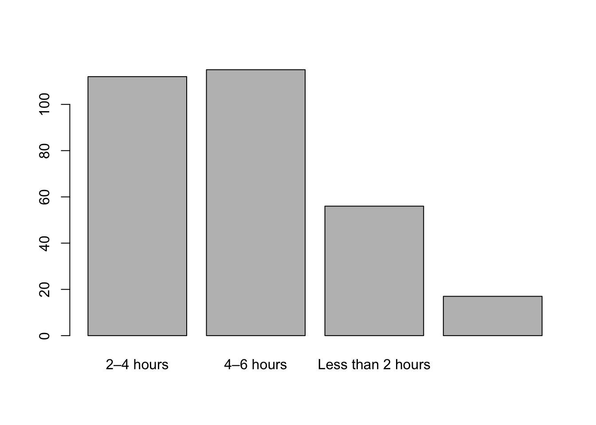
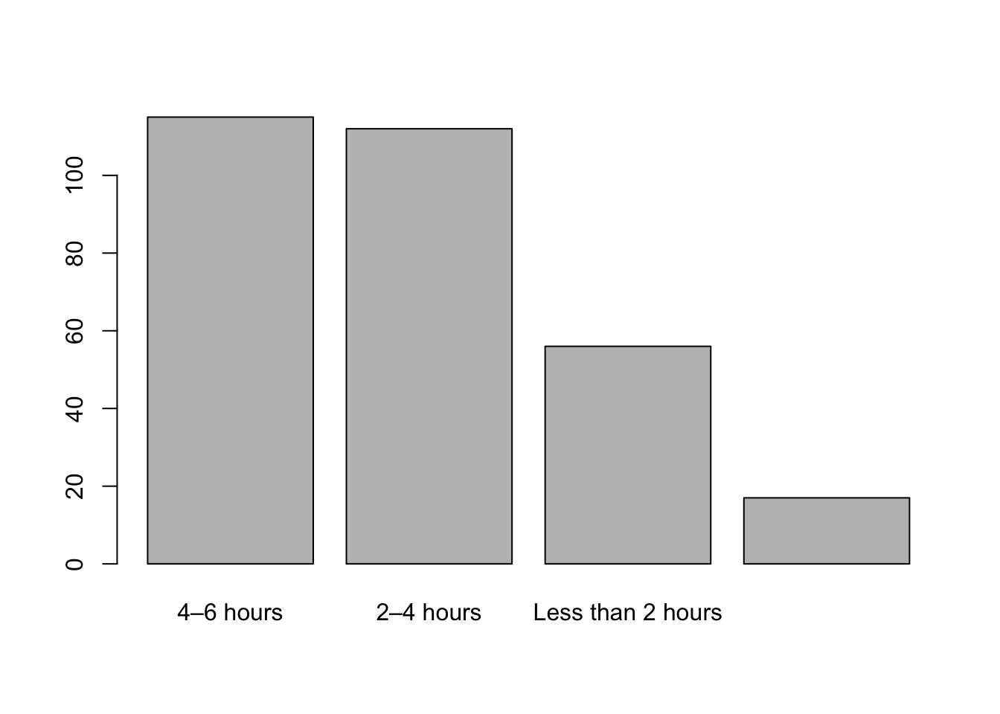
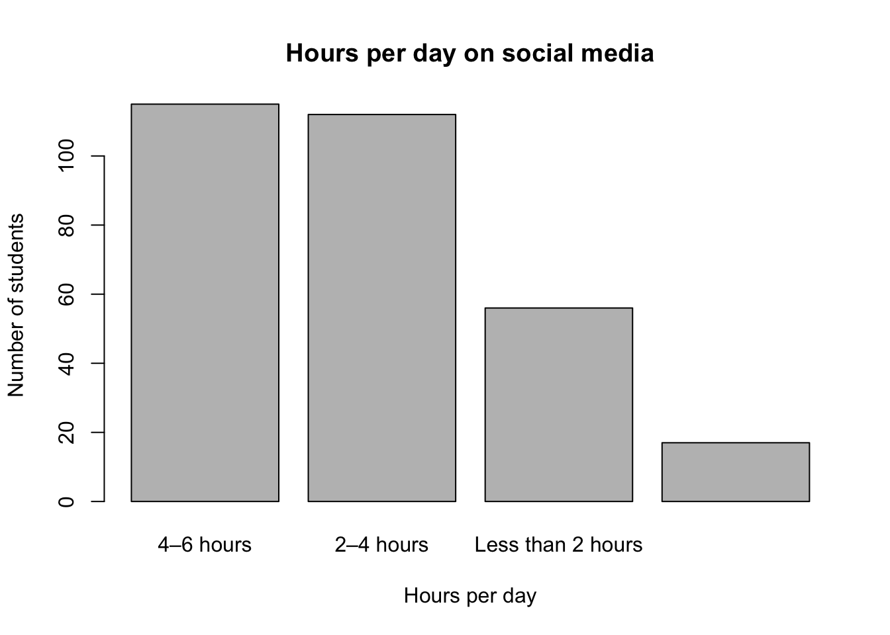

Making Sense of Survey Data
Now that we have cleaned up our survey data, we can start asking
questions about it! By the end of the previous session,
Collecting and Cleaning
Survey Data, we generated two cleaned datasets:
survey_data_tidy.csvsurvey-data_wide.csv
Long, or “tidy” data and wide data each have their pros and cons, and
in this session we’re going to explore the benefits and drawbacks of
each as we explore our data. But first, let’s take a moment to do some
thinking:
To begin, let’s open up our .RProj file, so that our
working directory will be captured. Now, let’s create a new R script,
and call it survey_analysis_script.R.
Load the Tidyverse
Now that we’ve started a new script, we need to load the libraries
that we’ll be using, which in this case is just the Tidyverse.
library(tidyverse)
Load the data
We can now load the two datasets that were generated in the previous
session:
survey_data_tidy <- read_csv("survey_data_tidy.csv")
survey_data_wide <- read_csv("survey_data_wide.csv")
- Take a look at
survey_data_tidy and
survey-data_wide using the View()
command.
View(survey_data_tidy)
View(survey_data_wide)
In groups, spend a few minutes talking about some things you’d
like to know about the data (ie. groups you’d like to count, possible
relationships, etc.).
Taking a closer look at the tidy and
wide datasets, can you think of reasons why certain
questions might be better with either one of the datasets?
Exploring Wide Data
Wide data is easier for humans to read and interpret, and lends
itself well to asking simple questions from single variables, or
columns, of data. Tidy data is better for asking more complicated
questions, as well as asking about multiple variables and possible
relationships between them. Let’s first start with some simple questions
we can ask from the wide version of our data.
A simple first step when exploring a dataset is getting counts of
individual variables. To do this, we can use the count()
function:
What does the sample breadkdown of gender?
survey_data_wide |>
count(gender)
Step-by-step explanation:
- We start with the
survey_data_wide object and use the
pipe, |>, to indicate we want to do something with
it.
- We then use the
count() function to give us a total sum
of whatever variable/column name we put inside the brackets.
What is the sample breakdown of age?
survey_data_wide |>
count(age)
In addition to looking at single variables with the
count() function, we can also generate quick summary tables
across multiple variables by separating them with commas
,:
What is the sample breakdown of age and gender?
survey_data_wide |>
count(age, gender)
## # A tibble: 24 × 3
## age gender n
## <dbl> <chr> <int>
## 1 18 Female 31
## 2 18 Male 34
## 3 18 Non-binary/Other 3
## 4 19 Female 25
## 5 19 Male 24
## 6 19 Non-binary/Other 6
## 7 20 Female 28
## 8 20 Male 17
## 9 20 Non-binary/Other 3
## 10 21 Female 12
## # ℹ 14 more rows
You’ll see the note that there are 14 more rows, and that you can use
the print() function to view more. You can do this you can
do this by specifiying the amount of rows (in this case there are
24)
survey_data_wide |>
count(age, gender) |>
print(n = 24)
You can keep adding additional variables to these, noting that each
variable will add additional rows. If you don’t want to look at the
values in the R console, you can use the View() function to
open it in a separate tab.
survey_data_wide |>
count(age, gender, year_of_study) |>
View()
If this is something you want to come back to, you can save it into
an R object.
demographics_count <- survey_data_wide |>
count(age, gender, year_of_study)
View(demographics_count)
A final thing that can be helpful with the count()
function is adding in the proportion that each sum represents in the
total sample.
survey_data_wide |>
count(gender) |>
mutate(prop = n / sum(n))
Step-by-step explanation:
- Start by piping the
survey_wide object to the
count() function like we’ve been doing.
- Add another pipe to indicate we are passing that count to another
function.
mutate(prop creates a new column called
prop, which stands for proportion (you can name this
whatever you want).- Everything on the right side of the
= is assigned to
the new prop column.
n is the count for each gender category, and
sum(n) is the total number of every row/person in the
sample.n / sum(n)) calculates
"count of each category" / "total count", which gives a
proportion.
Your Turn!
See if you can create the following from the
survey_data_wide object:
- A count of each
gender category.
survey_data_wide |>
count(gender)
- A count of each
age and
year_of_study.
survey_data_wide |>
count(age, year_of_study)
- The count of
age and its proportion.
survey_data_wide |>
count(age) |>
mutate(prop = n / sum(n))
- The count of
age, year_of_study, and the
proportion
survey_data_wide |>
count(age, year_of_study) |>
mutate(prop = n / sum(n))
Simple Barplots as Exploration
In addition to creating summary tables to explore data, creating
simple plots can be another way to explore your data.
One way to do this, is using the base R barplot()
function. This can be done in a few steps.
In this example, we’re going to plot the categories of the
hours_per_day columns.
First, let’s look at the $ operator. When placed after a
data object in R, it allows you to isolate specified columns.
survey_data_wide$hours_per_day
This will show all the values in that column in the R console. Give
it a try with other columns!
Next, we can also use the table function here, to
generate a quick summary table of that column.
table(survey_data_wide$hours_per_day)
Give this a try with some other columns!
Now we’re going to save this table as an object called
hours_table.
hours_table <- table(survey_data_wide$hours_per_day)
Finally, we can feed the hours_table object into the
barplot() function to get our plot.
barplot(hours_table)

You might notice that the bars aren’t in any particular order, which
can be a bit annoying. Let’s clean this up by creating adding another
step.
hours_sorted <- sort(hours_table, decreasing = TRUE)
barplot(hours_sorted)

The sort function is telling R that we want to reorder
the values in hours_table, and the
decreasing = TRUE allows us to see the values from biggest
to smallest. You can change this to decreasing = FALSE to
see smallest to biggest.
When exploring data, it’s not always necessary to add labels to our
plots. However, this chart might be something you want to communicate,
so let’s add some labels!
barplot(hours_sorted,
main = "Hours per day on social media",
xlab = "Hours per day",
ylab = "Number of students")

With the barplot() function:
main is the title of the chart.xlab is the label on the x (horizontal) axis.ylad is the label on the y (vertical) axis.
Your Turn!
- Make a barplot for the
feel_increase_stress variable,
that orders the bars from biggest to smallest, and has labels for the
title, and both axes.
Hint: break this into 3 steps:
- Create an object that creates a table of the
feel_increase_stress column
- Create another object that sorts the table in decreasing order
- Create a barplot and add 3 layers of labels.
stress_count <- table(survey_data_wide$feel_increase_stress)
stress_sorted <- sort(stress_count, decreasing = TRUE)
barplot(stress_sorted,
main = "Social media makes me feel anxious or stressed",
xlab = "Feeling anxious or stressed",
ylab = "Number of students")
- Try this with another column!
Moving to Tidy Data
As we’ve seen, working with wide data can be helpful for generating
quick summaries and counts. But what if we want to ask something that’s
a bit more complicated?
In groups, take a look at the data and talk about how you might go
about answering the question, which platforms are most
used?
There are certainly ways to do this with the wide data. One way would
be to use the count() function for each individual column.
However, this is a bit clunky, and then you would have to then deal with
merging the responses into a table (not impossible, but it’s more work).
There is a way to do this is a single code chunk, but it becomes overly
long and complicated:
platform_counts_wide <- survey_wide |>
summarise(
across(
c(`LinkedIn`, Instagram, Reddit, Facebook,
`X (Twitter)`, TikTok, Snapchat),
~ sum(.x)
)
) |>
pivot_longer(
cols = everything(),
names_to = "platform",
values_to = "n_users"
) |>
arrange(desc(n_users))
platform_counts_wide
We don’t need to understand this code chunk, it is just an example of
what the code looks like. However, if we shift to tidy
data, the code becomes much shorter and simpler.
First, let’s start by taking another look at the tidy data.
View(survey_data_tidy)
You can see that there is the single platforms column
that we are able to query.
Now, let’s do a count of the different categories in this column.
survey_data_tidy |>
count(platforms, name = "n_students")
## # A tibble: 7 × 2
## platforms n_students
## <chr> <int>
## 1 Facebook 3200
## 2 Instagram 5340
## 3 LinkedIn 2520
## 4 Reddit 4100
## 5 Snapchat 2420
## 6 TikTok 5480
## 7 X (Twitter) 2960
In this code, we are using the count() function like we
just did, and the name = "n_students" creates a new column
name for the number for each column. "n_students" was used
to show this is the number of students, but you can put anything you
want here, or leave it blank if preferred.
You can see that this code is very simple, but there is a big problem
with the numbers! Because our tidy data adds additional rows to data, we
are seeing numbers in the thousands when our sample size is only 300.
However, when we cleaned the data, we created a unique ID for each
entry. This was to help with re-identifying responses if needed, but it
can also help us with eliminating redundant rows.
survey_data_tidy |>
distinct(ID, platforms) |>
count(platforms, name = "n_students")
## # A tibble: 7 × 2
## platforms n_students
## <chr> <int>
## 1 Facebook 160
## 2 Instagram 267
## 3 LinkedIn 126
## 4 Reddit 205
## 5 Snapchat 121
## 6 TikTok 274
## 7 X (Twitter) 148
The distinct() function is telling R that we only want
to keep unique combinations of each student ID and
platform, which eliminates any of the redundancy of the
tidy data. As you can see, the numbers are now accurate to our
sample.
As with before, it can be nice to arrange the numbers from biggest to
smallest.
survey_data_tidy |>
distinct(ID, platforms) |>
count(platforms, name = "n_students") |>
arrange(desc(n_students))
## # A tibble: 7 × 2
## platforms n_students
## <chr> <int>
## 1 TikTok 274
## 2 Instagram 267
## 3 Reddit 205
## 4 Facebook 160
## 5 X (Twitter) 148
## 6 LinkedIn 126
## 7 Snapchat 121
In this case, the arrange() function tells R that we
want to change the order of something, and desc(n_students)
specifies that we want the n_students column, which is the
values for each platform, to be listed in descending order (biggest to
smallest).
Finally, once we’re happy with the output of this code chunk, we can
save it as an R object to revisit. We’ll call the object
platform_count, and now we can easily view and work with it
going forward.
platform_count <- survey_data_tidy |>
distinct(ID, platforms) |>
count(platforms, name = "n_students") |>
arrange(desc(n_students))
Going Deeper with Tidy Data
Let’s keep digging into the tidy data, and start asking questions
that are related to our bigger research question, “How does
social media usage influence the mental health of university
students?
Comparison Operators
Comparison operators allow us to look for specific criteria in our
dataset. These return TRUE or FALSE based on
whether the condition is met.
== |
Equal to |
5 == 5 |
TRUE |
!= |
Not equal to |
5 != 3 |
TRUE |
< |
Less than |
3 < 5 |
TRUE |
> |
Greater than |
5 > 3 |
TRUE |
<= |
Less than or equal to |
3 <= 3 |
TRUE |
>= |
Greater than or equal to |
5 >= 3 |
TRUE |
Once we understand these basic comparison operators, we can combine
them using logical operators to create more complex filtering
conditions.
Logical Operators
Logical operators allow us to filter data based on multiple
conditions.
& |
Logical AND (Both conditions must be TRUE) |
(5 > 3) & (4 < 6) |
TRUE |
| |
Logical OR (At least one condition must be TRUE) |
(5 > 3) | (4 > 6) |
TRUE |
! |
Logical NOT (Reverses TRUE/FALSE) |
!(5 > 3) |
FALSE |
Asking Questions with Filtering
The filter() function returns only the rows that meet a
specified condition.
From the feel-question column in our tidy data, these
values indicating whether social media makes students feel connected to
others (feel_connected), anxious or stressed
(feel_increase_stress), distracts them from academic work
(feel_distracted), or improves their mood
(feel_improved_mood).
As part of the bigger research question, “How does social media usage
influence the mental health of university students?, we can use this
variable to start asking the question, “how many students feel X
because of their social media use?
Let’s first start by asking, “how many students feel anxious
or stressed because of social media?
stressed_count <- survey_data_tidy |>
distinct(ID, feel_question, feel_response) |>
filter(feel_question == "feel_increase_stress") |>
count(feel_response, name = "feel_increase_stress") |>
arrange(desc(feel_increase_stress))
stressed_count
## # A tibble: 5 × 2
## feel_response feel_increase_stress
## <chr> <int>
## 1 Agree 69
## 2 Disagree 69
## 3 Neutral 68
## 4 Strongly disagree 48
## 5 Strongly agree 46
Step-by-step explanation:
- We start by creating a new R object that will save this information,
called
stressed_count.
- We then pipe the
survey_data_tidy object to indicate we
will manipulate it in some way.
- Next,
distinct(ID, feel_question, feel_response) tells
R to only keep unique combinations of ID,
feel-question, and feel_response.
- This is then piped through to the
filter() command, and
feel_question == feel_increase_stress looks for only for
the stressed values in the feel_question column.
- This is piped into the
count() function, to indicate we
want a count of every unique feel_increase_stress answer in
the feel_response column, and gives names the new column of
counts feel_increase_stress.
- Finally, the
arrange(desc(feel_increase_stres)) line
arranges the values from biggest to smallest.
Your Turn!
Hint: Use the code chunk above to guide your solution.
- How many students feel more connected because of their
social media use?
connected_count |>
distinct(ID, feel_question, feel_response) |>
filter(feel_question == "feel_connected") |>
count(feel_response, name = "feel_connected") |>
arrange(desc(feel_connected))
connected_count
- How many students feel distracted by their social media
use?
distracted_count |>
distinct(ID, feel_question, feel_response) |>
filter(feel_question == "feel_distracted") |>
count(feel_response, name = "feel_distracted") |>
arrange(desc(feel_distracted))
distracted_count
Asking a Research Question
So far the questions we have been asking of our data have related to
counts, which can be very helpful, but may not get to the bigger
research question we want to ask. As part of the bigger research
question, we might want to ask, “How does heavy usage of social
media affect mental health compared to light usage?
There will be a few steps to answer this question, but let’s break
them down and take them one at a time:
- Define heavy vs. light users
- Because the
feel_response values are in a Likert scale,
we need to convert them to numbers to allow us to get averages.
- Get the average score for each
feel_question for both
light and heavy users.
- Combine the groups
- Plot the comparison
Let’s get started!
Defining heavy vs. light users
In the hours_per_day question, survey respondents were
given four possible answers:
- Less than 2 hours
- 2-4 hours
- 4-6 hours
- More than 6 hours
For the sake of our analysis, let’s say that respondents that
selected “Less than 2 hours” and “2-4 hours” are light
users, and those that selected “4-6 hours” and “More than 6
hours” are heavy users.
Let’s create a new column in our data to classify respondents as
“light” or “heavy” users based on this criteria.
survey_data_tidy <- survey_data_tidy |>
mutate(
usage_group = case_when(
hours_per_day %in% c("Less than 2 hours", "2-4 hours") ~ "Light",
hours_per_day %in% c("4-6 hours", "More than 6 hours") ~ "Heavy",
)
)
Step-by-step explanation:
survey_data_tidy <- survey_data_tidy |> is
telling R that we want to add/do something new to
survey_data_tidy object, and save it back into the
object.- This data is piped into the
mutate() function, which is
going to create a new column in our data called
usage_group.
- Everything after the
= will be where we define what
goes into this new column.
- The
case_when() function works in the following way:
“if X condition is true, then do Y”.
hours_per_day %in% checks for values that are in the
hours_per_day column, which are specified in the following
brackets.- The
c in
c("Less than 2 hours", "2-4 hours") tells R we are looking
for multiple values in the hours_per_day column, which in
this case is “Less than 2 hours” and “2-4 hours”.
- If
hours_per_day equals either of these values, they
will be give the value “Light” in the new column.
hours_per_day %in% c("4-6 hours", "More than 6 hours") ~ "Heavy"
does this same process, but if these new conditions are met, they will
be given the value “Heavy” in the new column.
Let’s take a look at survey_data_tidy to see this new
column.
View(survey_data_tidy)
Convert Feel Responses to Numbers
The feel responses are in a Likert/textual format, and calculating
the average of text isn’t something that is possible (the text must be
counted or quantified, then calculated). To allow us to find the
average, we’re going to create another column that applies numerical
values to each Likert response.
Converting Likert responses to numbers.
survey_data_tidy <- survey_data_tidy |>
mutate(
feel_score = case_when(
feel_response == "Strongly disagree" ~ 1,
feel_response == "Disagree" ~ 2,
feel_response == "Neutral" ~ 3,
feel_response == "Agree" ~ 4,
feel_response == "Strongly agree" ~ 5,
)
)
Step-by-step explanation:
survey_data_tidy <- survey_data_tidy |> is
telling R that we want to add/do something new to
survey_data_tidy object, and save it back into the
object.
- The data is piped into the
mutate() function, which is
going to create a new column.
- The new column will be called
feel_score, and will
contain all the information after the =.
- Much like the previous example, we are using
case_when() to tell R that if X, then Y.
- In this case
feel_response == "Strongly disagree" ~ 1,
we are saying, “if the feel_response column has a value
that is”Strongly disagree”, we want to add the value “1” in the new
column.
- Repeat for each value in the Likert scale, and we’re ready to
calculate!
Let’s take another look at survey_data_tidy.
View(survey_data_tidy)
We’re getting close! Let’s now calculate the average for light users.
We’ll do this in two distinct steps.
Step 1: Isolate light users into their own grouping
light_users <- survey_data_tidy |>
filter(usage_group == "Light")
Step-by-step explanation:
- We’re creating a new R object called
light_users, that
will help us easily calculate values in this group.
- After piping
survey_data_tidy, we use the
filter(user_group == "Light") to select only those rows in
the user_group column that have the value “Light”.
We can view this new object:
View(light_users)
Step 2: Calculate the average of light users’ feel responses
light_avgs <- light_users |>
group_by(feel_question) |>
summarise(
avg_feel = mean(feel_score),
.groups = "drop") |>
mutate(usage_group = "Light")
Step-by-step explanation:
- We are creating a new object called
light_avgs that
will hold the averages for all feel responses for light users.
- Pipe the data from the
light_users object into
group_by(feel_question), which tells R to calculate results
separately for each feel question.
- This is piped into the
summarise() function, which sets
up for the actual calculation we want to conduct.
avg_feel will create a new column with the values on
the right side of the =.mean(feel_score) calculates the average score for each
feel response. This will give a table with one row per
feel_question, and one column containing the average for
each (avg_feel)..groups = "drop" tells R to get rid of the grouping
structure it uses to calculate the values. In plain language, “we’re
done grouping, give me a regular table now”.- This is piped into
mutate(user_group = "Light") to add
a new column to the table called user_group, and every row
will get the value “Light”. This step is helpful because when we combine
the light and heavy users into one dataset for plotting, this will keep
all the values sorted by their usage groups.
Let’s take a look at the new table we created!
light_avgs
Your Turn!
Now that you’ve seen how this works for the light users, see if you
can do this for heavy users. This is a secret of using a coding
language, where you don’t need to write every line from scratch, and you
just need to understand code chunks enough to know what parts to
change.
- Isolate heavy users into their own group, and save it as an object
called
heavy_users
heavy_users <- survey_data_tidy |>
filter(usage_group == "Heavy")
- Calculate the average of heavy users’ feel responses, and save it as
an object called
heavy_avgs.
heavy_avgs <- heavy_users |>
group_by(feel_question) |>
summarise(
avg_feel = mean(feel_score),
.groups = "drop") |>
mutate(usage_group = "Heavy")
Combine the Groups
We’re getting close! The next step we need to do is combine the light
and heavy usage groups to make it very easy to plot. This can be done
with a single line of code.
Combining the light and heavy user averages.
feel_avgs <- bind_rows(light_avgs, heavy_avgs)
Step-by-step explanation:
- We’re creating a new R object called
feel_avgs that
will have the averages for all feel responses for both light and heavy
users.
- the
bind_rows() function takes two or more data frames
that have the **same columns*, and combines them by stacking them
vertically.
lights_avgs and heavy_avgs are the two
objects that have the averages, and this will effectively combine
them.
Let’s take a look.
feel_avgs
Plotting the Results
Now that we have our data ready to go, we can now put it into a plot.
Earlier in this session we used the barplot() function,
which is great as a quick way to visualize data in bar charts. However,
a much more powerful visualization package, that is part of the
Tidyverse, is ggplot2.
This will not be a deep dive into ggplot2, but if you are interested
in learning more, check out the session on
Visualization with ggplot.
ggplot offers a number of different visualization types, and as it
works in “layers”, you can keep adding more elements to your
visualizations, making it an extremely powerful and precise tool. As
mentioned, this won’t be a deep dive, but we’ll take a look at what
visualizing our data in ggplot can do for our data.
Visualizing the questions “How does heavy usage of social media
affect mental health compared to light usage?”
ggplot(feel_avgs, aes(x = feel_question, y = avg_feel, fill = usage_group)) +
geom_col(position = "dodge")
Step-by-step explanation:
- Every visualization with ggplot starts with the
ggplot() command to tell R that we’re going to make a
plot.
- The first element to go in the brackets is the data we want to plot,
which in this case is
feel_avgs.
- After a comma
, we use the aes() function
to describe the aesthetics of what the plot will look like. In this
case, we specify that the x-axis will contain feel_question
column in the table, and the y-axis will contain avg_feel,
which is the averages. fill = usage_group indicates that we
want each usage group to be filled with a different colour.
- Now that we’ve specified the aesthetics, we insert a plus sign
+ to add additional elements.
geom_col() specifies the geom, or type of chart we want
to make (there are many!), and position = "dodge" tells R
that we want a separate column for light and heavy users, instead of a
stacked column.
You’ll see that there’s now a plot in the viewer pane in RStudio
(bottom right). Before we get to the data insights from the plot, it’s
worth noting that there’s an issue with the chart. On the y-axis, we see
numbers, which aren’t very good at communicating the Likert scale we’re
visualizing, and the numbers end at 3 (they are chopped off because
that’s where the averages stop). To communicate these findings more
effectively, let’s update the y-axis to be more descriptive and easier
to interpret.
Cleaning up the y-axis of our plot
ggplot(feel_avgs, aes(x = feel_question, y = avg_feel, fill = usage_group)) +
geom_col(position = "dodge") +
scale_y_continuous(
breaks = 1:5,
labels = c(
"1 = Strongly disagree",
"2 = Disagree",
"3 = Neutral",
"4 = Agree",
"5 = Strongly agree"
)
) +
expand_limits(y = 5)
Step-by-step explanation:
Beginning where we left off at the first plot,
- We and a plus sign
+ to tell R we want to add another
layer.
scale_y_continuous( tells R we want to change how the
y-axis looks, and everything in these brackets will add to this.breaks = 1:5 tells R that we want to put tick marks at
the values 1, 2, 3, 4, 5. 1:5 is shorthand for all the
numbers between 1-5.- Don’t forget to separate the line with the comma
,!
labels = c("1 = Strongly disagree, ...) replaces the
numbers on the y-axis with whatever textual labels are put in the
quotation marks. Because we specified breaks = 1:5, it will
accept five values. This can be expanded or reduced according to your
plot.- There are two end brackets
)) that need to be closed.
One for scale_y_continuous( command, and one for
labels = c(.
- Add another plus sign
+ to add another layer.
expand_limits(y = 5) expands the chart to five tick
marks, to make sure we can show the full scale.
This next part is beyond the scope of this lesson, but if you really
want to get crazy, you can adjust any part of the plot you’d like.
Copy + paste this code in your RStudio editor and run it to see the
results.
avg_feel_plot <- ggplot(feel_avgs, aes(x = feel_question, y = avg_feel, fill = usage_group)) +
geom_col(position = "dodge") +
scale_y_continuous(
breaks = 1:5,
labels = c(
"1 = Strongly disagree",
"2 = Disagree",
"3 = Neutral",
"4 = Agree",
"5 = Strongly agree"
)
) +
expand_limits(y = 5) +
scale_x_discrete(
labels = c(
feel_connected = "Makes me feel connected",
feel_distracted = "Makes me feel distracted",
feel_improved_mood = "Improves my mood",
feel_increase_stress = "Increases my stress")) +
scale_fill_discrete(
name = NULL,
labels = c("Heavy users", "Light users")) +
labs(
x = "Agree or disagree about social media and your mental health:",
y = "Average feeling response",
title = "Social media and mental health across light and heavy users") +
theme( axis.title.y = element_text(angle = 0, vjust = 0.5))
avg_feel_plot
Wrapping Up
Saving files
We haven’t generated as many files as we did in the previous session,
but you’ll want to save two things:
- The R script for this session:
file > save
- The
survey_data_tidy.csv file that has new columns:
write_csv(survey_data_tidy, "survey_data_analyzed.csv")
- The final plot we created:
ggsave(filename = "avg_feel_plot.pdf", plot = p, width = 8, height = 6)
In addition to these files, you can imagine that you might want to
save other snapshots of the data (ie. light_users,
heavy_users, etc.), or the plot you created.
Revisiting our file list:
avg_feel_plot.pdfsocial-media-survey_ORIGINAL.csvsocial-media-survey.csvsurvey_analysis_script.Rsurvey_data_analyzed.csvsurvey_data_tidy.csvsurvey_data_wide.csvsurvey_data.Rprojsurvey_cleaning_script.Rsurvey-data_clean-cols_IDs.csvsurvey-data_clean-cols_no-ID.csv
You can see that there’s some inconsistency with how files are named
(hyphens - vs underscores _), and you might
want to think about creating folders to start organizing things. While
this is the end of the session, feel free to give this some thought and
map out how you might want to structure these files in folders, and
potentially rename then to better suit your use.
Finish
And that’s it for the workshop! We covered a lot of ground, but there
is also a lot that we weren’t able to cover. The hope is that these
sessions helped build some confidence in your ability to work with R,
and that you use this as a jumping off point for your learning
journey.
